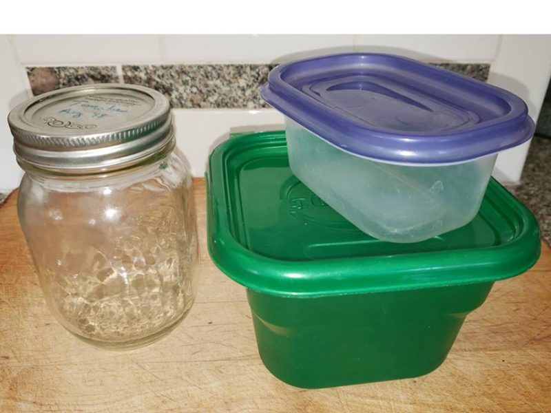

March 16, 2019
Who says you can’t take it with you?

Did you know that Americans waste roughly 40% of our food supply? Or that global greenhouse gas emissions from food waste accounts for 8% of human-caused greenhouse gas emissions?
According to Drawdown, a preeminent source on solutions to global warming, if ranked as a nation “food waste would be the third-largest emitter of greenhouse gases globally, just behind the United States and China”.
The impact of food waste isn’t limited to climate – it plays into global hunger, water pollution, and the destruction of natural habitat to make way for agricultural production.
Fortunately, there are many small steps that collectively create the solution. We can each help limit waste when eating out with these simple steps:
* Order only what you think you can eat.
* If you don’t want the chips, pickle, bread, etc., when placing your order let the server know so that they won’t end up having to throw it out when you leave.
* If you’re dining with a friend, consider splitting a dish.
* And finally, just in case you do end up with more than you can eat in one sitting, come prepared with reusable to-go containers so that you CAN take it with you! Keep them in your car, backpack or desk so you never get caught without!